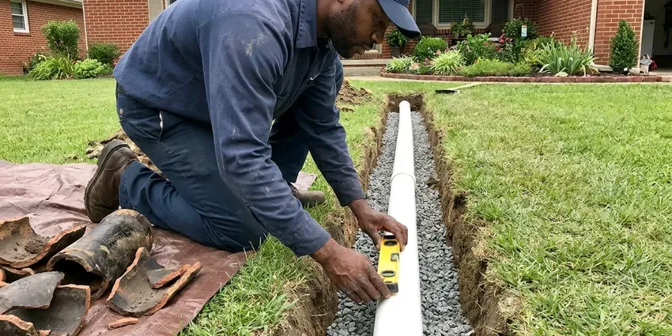

Tankless Water Heater Repair in Southaven, MS
From ignition failures to flow sensor faults, we handle tankless water heater repair throughout Southaven, MS with upfront pricing.
- Prompt, Reliable Service
- All Major Tankless Brands
- Descaling and Flush Service
- Long-Term Solutions

Need Tankless Water Heater Repair in Southaven, MS?
Never let a cold shower ruin your day, contact DFM Plumbing for fast and reliable service.
Dependable Tankless Water Heater Repair for Southaven, MS Homes
DFM Plumbing specializes in complete tankless water heater repair for homes and businesses throughout Southaven, MS. We understand the demands of on-demand hot water systems and are ready to handle all common issues, from ignition failures to flow sensor problems.
Our expertise includes:
- Flushing and descaling tankless units
- Reading error codes and component failures
- Diagnosing and repairing flow sensor issues.

Additional Plumbing Repair Services in Southaven, MS
We offer expert plumbing repair services across Southaven, MS to stop leaks, clear blockages, and keep every fixture working the way it should.


Customers
Why Choose DFM Plumbing for Tankless Water Heater Repair in Southaven, MS?
Many tankless problems come down to scale, undersized gas lines or blocked air intakes. We check all three on every service call.
- Certified Technicians, Our plumbers are brand-trained and experienced with all major tankless water heater brands and models.
- Certified Pros, Our plumbers are brand-trained and certified to work on all major tankless water heater brands, ensuring precise diagnostics and repairs.
- Advanced Tools, We use specialized diagnostic tools and equipment to accurately pinpoint problems within your tankless system, avoiding guesswork.
Citywide Coverage
From downtown to the surrounding suburbs of Southaven, DFM Plumbing ensures complete coverage for all your tankless water heater repair needs. We make it our priority to reach you quickly, limiting the inconvenience of a malfunctioning unit.
Experienced Team
Each technician at DFM Plumbing is regularly trained on the latest tankless technologies and repair techniques, which means solid service for your system.
Safety-First Approach
Safety is paramount in all our tankless water heater repair services, especially when dealing with gas lines and high-temperature components.
Trusted Certified Southaven Plumbing Services Professionals
At DFM Plumbing, we take pride in providing licensed, certified plumbing services throughout Southaven, MS. Backed by recognized industry credentials, our experienced plumbers combine technical skill with genuine customer care. Whether it is repair, installation, or maintenance, we follow strict safety and quality standards to deliver long-lasting results you can trust.
Call Us Now PHCC Plumbing Contractor Recognition
PHCC Plumbing Contractor Recognition Better Business Bureau (BBB) Accreditation
Better Business Bureau (BBB) Accreditation Angi Certified Pro
Angi Certified Pro ISO 9001 Quality Management Certification
ISO 9001 Quality Management CertificationTrusted Tankless Water Heater Repair Services in Southaven, MS
Tankless Water Heater Error Code Diagnostics in Southaven, MS
Modern tankless water heaters display error codes to indicate specific problems, from flow rate issues to combustion errors. Our experts in Southaven, MS are trained to interpret these codes accurately, using specialized diagnostic tools to pinpoint the exact component failure. This precision allows us to quickly order the correct parts and perform targeted repairs, saving you time and money. We address codes related to burner failures, fan issues and temperature sensor errors, among others.

Recirculation Pump Repair in Southaven
Many tankless systems use internal or external recirculation to deliver hot water more quickly. Pump failures, check valve problems or wrong schedule settings can cause long waits or lukewarm water. We test the pump, check valves and controls and set the schedule to match your routine. A properly tuned system saves both water and gas.
Noritz Tankless Water Heater Repair in Southaven, MS
Noritz tankless heaters are known for their sturdy design, but can sometimes face issues such as flow sensor malfunctions or venting problems. We provide specialized repair services for Noritz units in Southaven, MS, ensuring proper combustion, water flow and exhaust, which are crucial for safe and efficient operation.
Emergency Tankless Repair in Southaven
A tankless unit that leaks internally or shows a fault you cannot clear needs prompt attention. We put first no-hot-water calls and arrive with common sensors, igniters and filters. If a major component like a heat exchanger has failed, we check warranty coverage and order the part. We can often restore partial operation in the meantime.
Emergency Tankless Water Heater Repair in Southaven, MS
A sudden loss of hot water can be an emergency, especially on a cold morning in Southaven, MS. DFM Plumbing offers emergency tankless water heater repair to address serious failures promptly. We are available to troubleshoot issues like major leaks, complete system shutdowns or persistent error codes that prevent any hot water production. Our fast response team works quickly to restore your hot water, often on the same day.
Tankless Repair vs Replacement Cost in Southaven, MS
Descaling service typically costs $175 to $350, and sensor or igniter repairs run $250 to $600. Heat exchanger replacement can cost $800 to $1,500 or more unless covered by warranty. A new tankless unit installed usually ranges from $3,000 to $5,500. We compare these costs against the age and condition of your unit.
Commercial Tankless Water Heater Repair in Southaven
Commercial tankless water heaters in Southaven face heavier usage and require durable repair solutions. Whether it is for a restaurant, hotel or office building, we understand the importance of maintaining hot water availability. Our commercial tankless water heater repair services address larger capacity units, complex manifold systems and often more serious scaling issues. We focus on fast, efficient service to minimize disruption to your business operations.

No Hot Water Tankless Repair in Southaven
When your tankless unit fails to produce hot water, it is often due to issues with the ignition, gas supply or a clogged heat exchanger. Our technicians in Southaven will thoroughly diagnose the root cause, whether it is a faulty igniter, a pressure sensor fault or mineral buildup. We carry common replacement parts for fast fixes, restoring your continuous hot water supply efficiently. We also check for proper venting, which is crucial for the safe operation of your unit.
Tankless Water Heater Repair Near Me in Southaven, MS
Iron can leave orange stains on fixtures and laundry, and sulfur odors often trace back to the water heater anode or the well itself. Our team knows how scale affects each brand and how to prevent it. That knowledge helps your unit reach its full service life.
We are proud to be the trusted local experts for tankless water heater repair throughout Southaven. Our rapid response times and commitment to quality mean residents get their hot water systems back online quickly and efficiently, no matter where they are located in Mississippi.
DFM Plumbing at a Glance
- Licensed and insured plumbers serving Southaven, MS
- Same-day appointments and 24/7 emergency response
- Clear written estimates, no hidden fees
- 4.8-star rated by 503+ Mississippi customers
Southaven Map
Southaven Information
- Population
- 56,851
- Area codes
- 662/731/901
- Service area
- Southaven and communities within 40 miles
- Nearby
- Horn Lake, Olive Branch, Oxford, Tupelo
Iron can leave rusty stains on fixtures and laundry, and sulfur odors often trace back to the water heater anode or the well itself. For homes in Southaven, MS, timely tankless water heater repair is vital for fighting mineral buildup and keeping hot water consistent in every season.
Expert Services
Trust our professionals for reliable DFM Plumbing solutions in Southaven, MS.
Our Specialized Plumbing Services in Southaven, MS
At DFM Plumbing, we provide a complete range of plumbing services across Southaven, MS. From leak detection to full system installations, our team ensures fast, precise, and affordable service for both residential and commercial properties. Explore our core services below:


How Our Tankless Water Heater Repair Process Works in Southaven, MS
Our tankless water heater repair process in Southaven, MS is designed for efficiency and clarity, getting your hot water back quickly.
Request a Quote
Call (601) 265-9260 and share the brand, model and any error code on the display. We schedule a visit and bring parts that match the probable failure.
Diagnose the Unit
We read error history, test sensors and gas pressure and inspect for scale. You get a firm price for repair before any work begins.
Repair and Tune
We repair or replace failed components, descale if needed and test across low and high flow. Settings are adjusted so the unit runs at its best.
Frequently Asked Questions About Tankless Water Heater Repair in Southaven
The cost of tankless water heater repair in Southaven, MS can range from $150 to $800 or more, depending on the issue. Simple fixes like sensor replacements might be at the lower end, while major component replacements like a heat exchanger could be higher. We provide a detailed estimate once we find the problem.
Yes, DFM Plumbing stands behind its work. All our tankless water heater repairs come with a satisfaction guarantee and a warranty on both parts and labor. We will provide full warranty details with your repair estimate.
Typical signs include inconsistent hot water, a sudden loss of hot water, strange noises like banging or popping, a rotten egg smell or error codes displayed on the unit. Any of these symptoms warrant a professional inspection.
We stand behind our tankless water heater repairs with a solid warranty on both parts and labor. The specific warranty period will be discussed with you before any work begins, providing you peace of mind.
Error codes can be triggered by a variety of issues, such as low water flow, gas supply problems, ignition failures, exhaust blockages or faulty temperature sensors. Each code points to a specific system malfunction.
While some basic maintenance like filter cleaning can be done by homeowners, complex repairs involving gas lines, high voltage electricity or intricate internal components should always be left to a licensed professional. DIY attempts can be dangerous and cancel warranties.
Some homeowners do with a kit if service valves are installed. Diagnosing error codes and replacing sensors, igniters or gas components should be left to a professional.
Codes point to specific faults such as ignition failure, flame loss, overheating or scale buildup. Each brand uses its own code list, and we use manufacturer guides to interpret them.
What People Are Saying About Our Plumbing Experts?

Mark T.
When our office needed drain cleaning, DFM Plumbing provided quick, reliable service. The plumber arrived on time and made sure every drain flowed perfectly before leaving. Very satisfied.
Drain Cleaning · Olive Branch, MS
James P.
Our commercial plumbing system had a leak under the sink, and DFM Plumbing handled it professionally. The plumbers arrived quickly and restored everything without disruption to our customers.
Commercial Plumbing · Horn Lake, MS
Sofia M.
Two new toilets installed in one visit, no mess left behind, and the tech even adjusted a faucet he noticed was dripping. Fair pricing and really friendly.
Toilet Installation · Southaven, MS
Patricia H.
We had a slab leak that two other companies could not find. DFM Plumbing located it in under an hour, explained our options, and the price matched the quote to the dollar.
Slab Leak Repair · Starkville, MS
Emily R.
I called DFM Plumbing for plumbing repair, and the technician was fast, polite, and thorough. They explained the problem clearly and fixed it the same day. I will definitely hire them again. Highly recommended!
Plumbing Repair · Starkville, MSLaura S.
I scheduled a water heater replacement, and the team made the process smooth and affordable. The new unit works perfectly, and they cleaned up after completing the job.
Water Heater Replacement · Greenville, MS